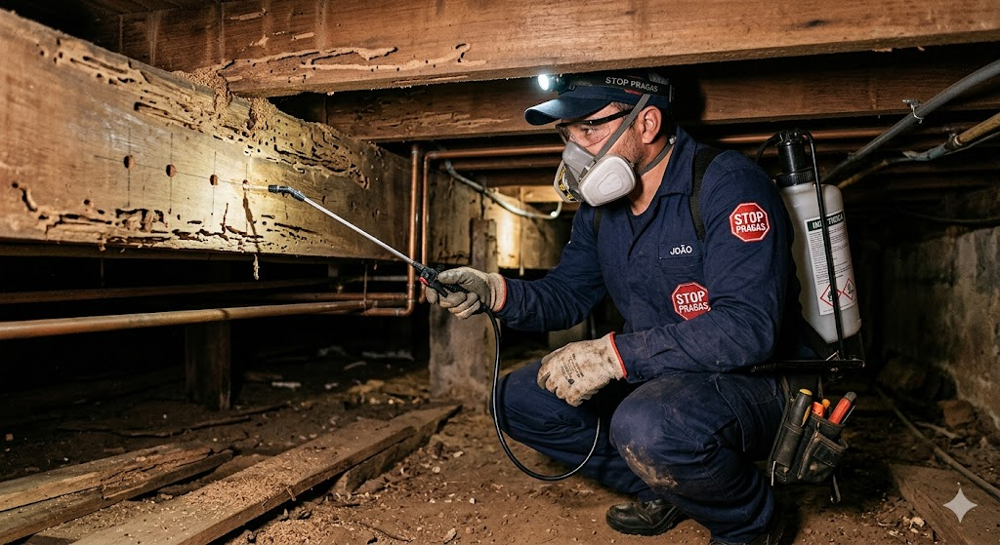

Descupinização
Eliminação e prevenção de cupins de solo e de madeira seca, protegendo a estrutura do imóvel.
Saiba mais
Cupins se alimentam de celulose — papéis, livros, madeira. O controle é complexo e exige inspeção prévia para identificar a espécie logo aos primeiros sinais. Nossa equipe reconhece se é cupim subterrâneo (Coptotermes), de madeira seca (Cryptotermes brevis), arbóreo (Nasutitermes sp.) ou Heterotermes sp., definindo a estratégia que elimina a praga sem danificar o patrimônio do cliente.